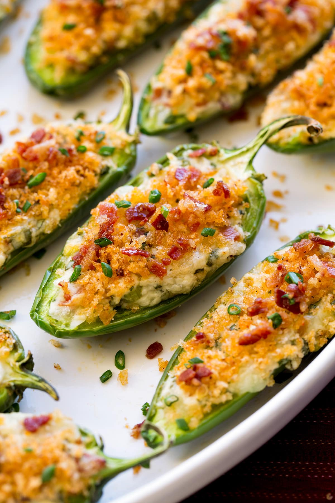

Jalapeno Poppers


Description
“What's a jalapeño popper?” A jalapeño popper, at its most basic, is a jalapeño pepper that has been stuffed with cheese — often cream cheese, sometimes a cheese blend — and heated.
Jalapeño poppers, or jalapeño bites, are jalapeño peppers that have been hollowed out, stuffed with a mixture of cheese, spices, and sometimes ground meat, and breaded and deep fried.
They are sometimes called armadillo eggs, especially if wrapped in bacon or sausage meat to give the appearance of an armadillo shell.
How Hot Are Jalapeños? Jalapeño peppers measure 2,500–8,000 on the Scoville scale, with a similar heat range as Fresno peppers (2,500–10,000 Scoville Heat Units) and
a lot more spice than poblano (1,000–1,500 SHU) and bell peppers (0 SHU).
There's heat from the jalapenos, crushed red pepper, and horseradish, but don't you worry, these won't burn your mouth!
The cream cheese and sweet apricot tame these down and make them the perfect savory-sweet appetizer.
Ingredients
- 10 large jalapeno peppers
- 1 (8 ounce) package cream cheese, softened
- 2 tablespoons prepared horseradish
- ½ teaspoon garlic powder
- ¼ teaspoon paprika
- 5 slices prosciutto, cut in half lengthwise
- ⅓ cup apricot preserves
- 2 teaspoons water
- ⅛ teaspoon garlic powder
- ⅛ teaspoon red pepper flakes
Steps
- Preheat the oven to 400 degrees F (200 degrees C). Line a baking sheet with aluminum foil.
- Cut each jalapeno lengthwise. Use a spoon to scrape the seeds and membranes out of the halves. Place jalapeno halves on the prepared baking sheet.
- Combine cream cheese, horseradish, garlic powder, and paprika in a small bowl. Stuff jalapeno halves with the mixture. Wrap each jalapeno with a strip of prosciutto.
- Bake in the preheated oven until peppers are slightly softened and cheese is lightly browned, 15 to 17 minutes.
- Meanwhile whisk apricot preserves, water, garlic powder, and red pepper flakes together in a small saucepan over medium heat until thickened. Remove from heat and keep sauce warm.
- Place jalapenos on a serving platter and drizzle apricot sauce on top.